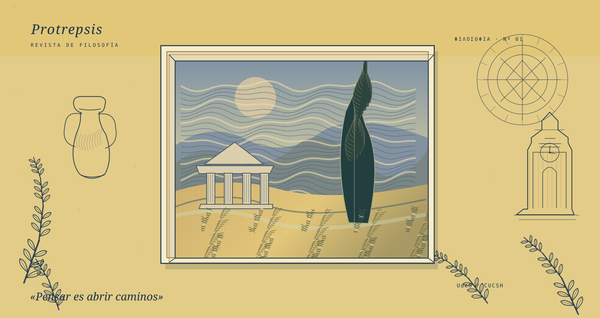

TEMAS DECLARADOS
Vocabulario del corpus
Etiquetas publicadas por la fuente cuando están disponibles. No se sustituyen por inferencias automáticas.

01 / PROTREPSIS · REVISTA DE FILOSOFÍA
La filosofía no tiene una última página.
Una revista de investigación filosófica para detenerse, disentir y descubrir nuevas preguntas. Un archivo vivo de obras, voces y encuentros intelectuales, publicado por el Departamento de Filosofía de la Universidad de Guadalajara.
QUIENES HACEN POSIBLE CADA PÁGINA
Protrepsis es mucho más que sus textos. Hay personas que dirigen, editan, dialogan y sostienen cada número. Conozca su historia y los nombres documentados de quienes integran el equipo y sus consejos.
70 personas en el directorio consultado · Equipo Editorial · Consejo Editorial · Comité Científico Asesor
Cada ficha guarda una pregunta, una voz y una fecha. Recorra los números de la revista como quien visita una colección viva.
COLECCIÓN FILOSÓFICA / ARCHIVO ABIERTO
Cargando…
Explore proximidades entre artículos sin confundir la similitud semántica con citas, lecturas o influencias demostradas.
Las relaciones semánticas del artículo seleccionado aparecerán aquí, debajo del mapa.
Palabras clave y autorías tal como aparecen documentadas en el corpus.
TEMAS DECLARADOS
Etiquetas publicadas por la fuente cuando están disponibles. No se sustituyen por inferencias automáticas.
AUTORÍAS
Conteo descriptivo de nombres tal como aparecen en los registros integrados.
MÉTODO
Las categorías visibles son una capa derivada únicamente para navegar. El Atlas distingue explícitamente relaciones con vector Qwen verificado de similitud textual de respaldo.